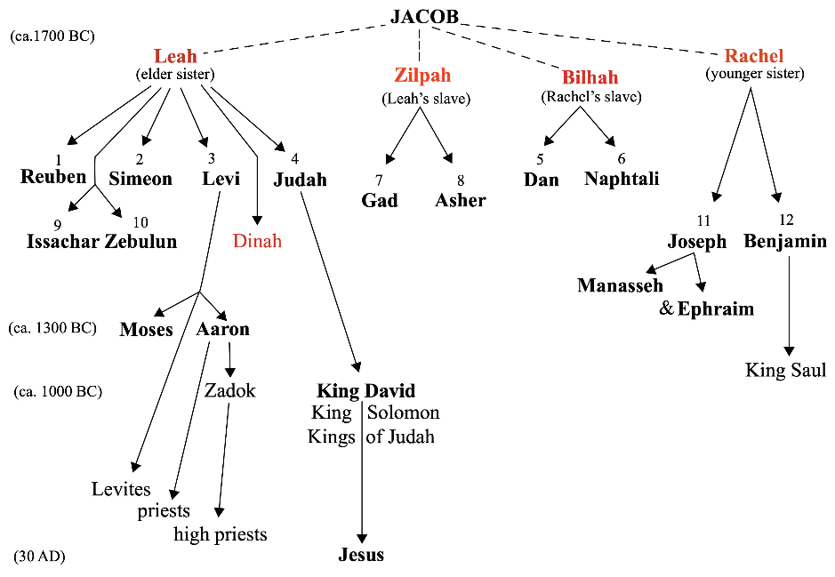

The lineage of Jacob is well addressed by Figure 4.11

Jacob’s departure from Laban’s family
Rachel bore Joseph. During that time, Jacob asked Laban to send him away so that he may go to his own home and country together with his wives and children. This happened because, one day, Jacob heard the sons of Laban saying that Jacob had taken all their father’s belongings; and from them, he had gained wealth. Then, the Lord told Jacob to return to the land of his father. Jacob arose and went with his wives and children. Later, Laban pursued him, and after getting him they made an agreement of not marrying other wives besides his daughters. Jacob put stones and set them up as a pillar, and Laban named the place “Jegar sahadutha,” but Jacob called it “Galeed.” Laban named it as a pillar of Mizpah. When Jacob was going home, he met the angels on the way. He said, this is God’s army, and he named the place “Mahanaim” (Genesis 32:1-2).
Jacob wrestles at Peniel
On his way back to his home land, when the family had left, a man wrestled with Jacob until the breaking of the day. This happened during the night when Jacob was alone. When the man saw that he did not contend Jacob, he touched the hollow of his thigh, and Jacob’s thigh was put out of joint as he wrestled with him. Jacob struggled